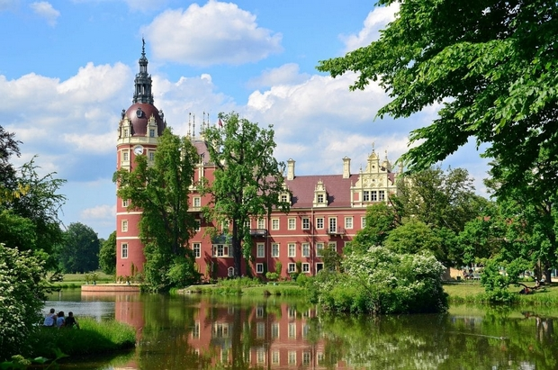

PARK MUŻAKOWSKI

Park krajobrazowy o powierzchni 559,90 hektarów, rozciągający się po obu stronach Nysy Łużyckiej, wzdłuż której przebiega granica polsko-niemiecka, został stworzony przez księcia Hermanna von Pückler-Muskau w latach 1815-1844. Park, harmonijnie wpisany w wiejski krajobraz, zapoczątkował nowe podejście w projektowaniu krajobrazu i wpłynął na rozwój architektury krajobrazu w Europie i Ameryce. Zaprojektowany jako „obraz malowany za pomocą roślin” nie miał nawiązywać do klasycystycznego krajobrazu, wyobrażenia Edenu czy utraconej doskonałości, ale wykorzystywał miejscową roślinność do podkreślenia walorów istniejącego krajobrazu. Ten „zintegrowany krajobraz” rozciąga się aż do miasta Muskau, poprzez pasy zieleni tworzące parki miejskie otaczające obszary zabudowane. Miasto stało się w ten sposób jednym z elementów utopijnego krajobrazu. W skład obiektu wchodzi również odbudowany zamek, mosty i arboretum.